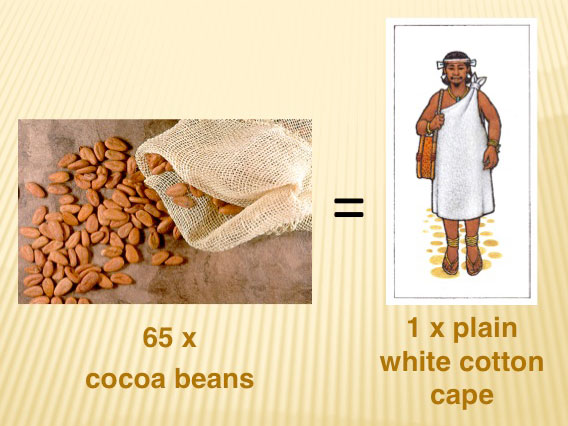
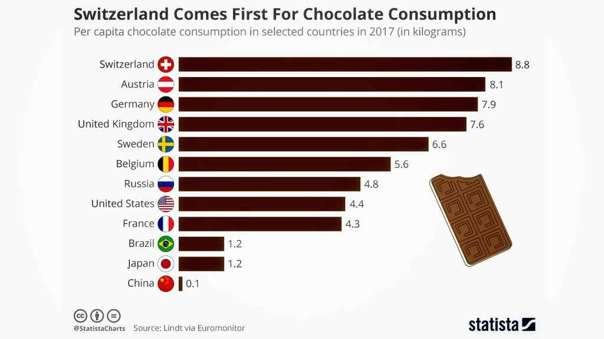
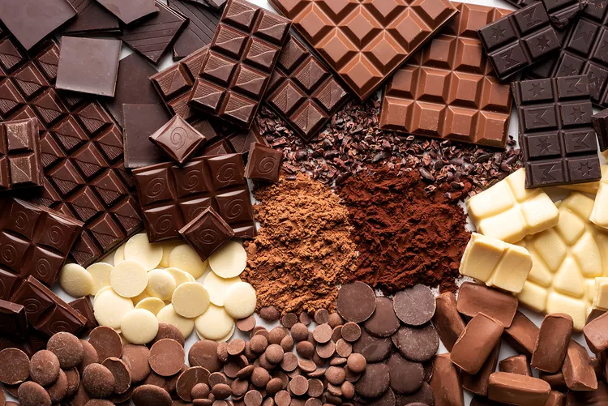

1. Cocoa has a long history, dating back several millennia
Evidence of cacao residues found on pottery fragments in Ecuador indicates that humans may have been consuming the plant as early as 5,000 years ago. The Maya, Toltec, and Aztec civilizations were known to extensively cultivate cacao over 3,000 years ago, using its beans to prepare a beverage. In 1502, Christopher Columbus brought cocoa beans to Spain following his fourth voyage, and it was during the Spanish conquistadores' arrival in Mexico in 1519 that they were introduced to a chocolate beverage by the Aztecs.

2. The earliest known chocolate bar was made in 1847
The initial chocolate bar molded from a mixture of sugar, chocolate liquor, and cocoa butter was developed by J.S. Fry and Sons, a British chocolatier, in 1847. In 1876, Daniel Peter, a Swiss chocolatier, introduced dried milk powder to chocolate, resulting in the creation of milk chocolate. However, it took some time before Peter and Henri Nestle established the Nestle Company and successfully introduced milk chocolate to the larger consumer market.
3. Dark chocolate can improve health
Dark chocolate is abundant in nutrients and is derived from the cocoa tree seed. It is considered one of the most exceptional sources of antioxidants worldwide. Research indicates that consuming dark chocolate can have positive effects on health, such as enhancing blood flow and reducing the risk of heart disease by lowering blood pressure. The presence of flavonols in dark chocolate may offer protection against sun damage, promote improved blood flow to the skin, and increase skin density and hydration. Additionally, cocoa has been found to significantly enhance cognitive function in elderly individuals with mental impairments and improve verbal fluency.

4. Cocoa was utilized as a form of currency
Until 1737, cacao beans that were cultivated in the equatorial regions of Veracruz and Mexico served as a form of currency. According to Cameron L. McNeil, an archaeologist and the author of "Chocolate in Mesoamerica: A Cultural History of Cacao," a turkey had a value of 100 cacao beans. The Aztecs considered Xocolatl (hot chocolate) to be more valuable than gold or silver. Following the defeat of Montezuma by Cortez in 1519, the conquistadors searched his palace and discovered vast quantities of cocoa beans instead of precious metals like gold or silver.
5. The Swiss have a strong affinity for chocolate
The United States represents 20% of global chocolate consumption and imports 21% of the world's cocoa. Surprisingly, Switzerland surpasses all other nations in per capita chocolate consumption, with an average of 22 pounds per person.  In comparison, Americans consume 11 pounds of chocolate per person. Despite being the primary producers of cocoa worldwide, Africans consume only a mere 3% of the total chocolate consumed each year.
6. English speakers erroneously refer to cocoa beans as "cocoa" instead of "cacao"
The term "cacao" has its roots in the Nahuatl language, specifically from the word "kakawatl," which was used by the Aztecs around 1300 AD. However, evidence indicates that "kakawatl" can be traced back to the Olmec civilization, which existed as early as 1500 BCE in Mesoamerica. When the Spanish arrived in the Americas, they translated "kakawatl" to "cacao." Interestingly, the term "cocoa" originated from an English translation of the Spanish word, but it was actually a spelling mistake.